| Rodafans on tour Charlton Athletic (13-14-15 oktober 2001) |
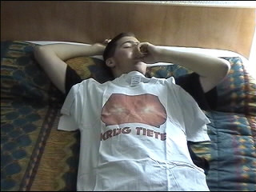
Ons jailhouse-hotel, Formule 1 te Barking.
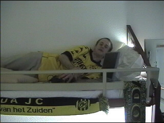
Digi-Bjorn neemt zijn laptop zelfs mee naar bed.
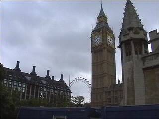
Het is zondag en we verkennen London. Hier zien we de toren van
de Big Ben en het millennium-reuzenrad.
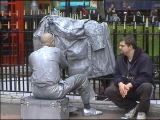
Tot onze grote verbazing zagen we Izzy aan het werk.
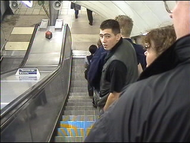
In Engeland rijdt men links, maar op de roltrappen moet je rechts
houden zodat de gehaaste medemens kan passeren.
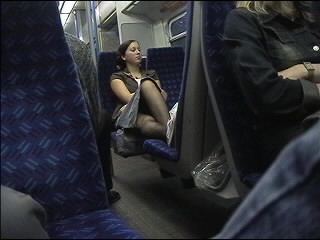
Het openbaar vervoer in London is okee!
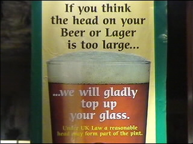
Ze hebben hier grote pinten met weinig schuim, maar je betaalt je
scheel en er zit nauwelijks alcohol op!
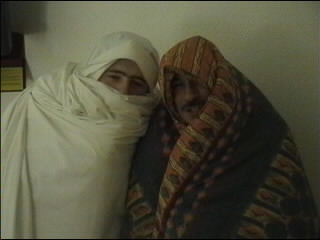
Het stikte van de buitenlanders in Barking, zelfs in het hotel!
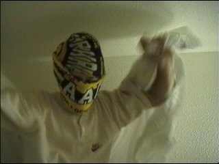
Er waren zelfs terroristen wat logisch is aangezien Arafat een bezoek
bracht aan London.
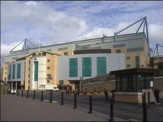
Dag drie. We gaan op stadion-tour. Dit is de voorgevel van Chelsea.
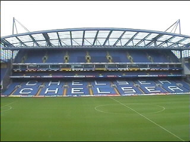
De grootste tribune van het vernieuwde stadion dat 36.500
toeschouwers kan herbergen.
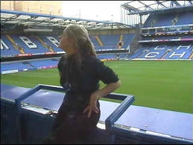
Onze rondleid-mup die liever niet zag dat Chelsea naar Tel Aviv zou
afreizen voor het UEFA-cup-treffen met Hapoel Tel Aviv.